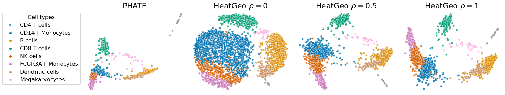

Heat Geo embedding
In this page we define the Heat Geo embedding class HeatGeo and the BaseEmb class.
The main parameters of HeatGeo are
the number of neighbors
knnconsidered to build the graph,the diffusion time
tauwhich can be set to"auto"or fixed to any positive real numberdenoise_regula float in[0,1], which corresponds to \(\rho\) in the paper with \(\rho=1\) uses only the triplet distance,harnack_regulis the weight parameter for the volume term in Def. 4.1. If it is too large all points will collapse together, we suggest using values in[0,2].

denoise_regulHeatGeo
HeatGeo (knn:int, anisotropy:int=0, decay:int=40, n_pca:int=40, tau:int=10, emb_dim:int=2, filter_method:str='mar', order:int=32, lap_type:str='normalized', tau_min:float=0.1, tau_max:float=200, n_tau:int=1, log_normalize:bool=False, scale_factor:float=1.0, denoising:bool=False, graph_type:str='alpha', truncation_type:Optional[str]=None, truncation_arg:Optional[str]=None, treshold_type:Optional[str]=None, harnack_regul:float=0, norm_treshold:bool=True, mds_weights_type:Optional[str]=None, mds_weights_args:Optional[str]=None, denoise_regul:float=0.0)
Base class for embedding methods.
| Type | Default | Details | |
|---|---|---|---|
| knn | int | ||
| anisotropy | int | 0 | |
| decay | int | 40 | |
| n_pca | int | 40 | |
| tau | int | 10 | |
| emb_dim | int | 2 | |
| filter_method | str | mar | |
| order | int | 32 | |
| lap_type | str | normalized | |
| tau_min | float | 0.1 | |
| tau_max | float | 200 | |
| n_tau | int | 1 | |
| log_normalize | bool | False | |
| scale_factor | float | 1.0 | |
| denoising | bool | False | |
| graph_type | str | alpha | |
| truncation_type | Optional | None | |
| truncation_arg | Optional | None | |
| treshold_type | Optional | None | “min” or “max” |
| harnack_regul | float | 0 | Harnack regularization parameter, between 0 and 1. |
| norm_treshold | bool | True | |
| mds_weights_type | Optional | None | |
| mds_weights_args | Optional | None | “heat_kernel”, “inv_dist”,“gaussian_dist” |
| denoise_regul | float | 0.0 |
BaseEmb
BaseEmb (knn:int, anisotropy:int=0, decay:int=40, n_pca:int=40, tau:Union[int,str]='auto', emb_dim:int=2, order:int=32, random_state:int=42, scale_factor:float=2.0, tau_min:float=0.1, tau_max:float=1.0, n_tau:int=1, n_landmarks:Optional[int]=None, solver:str='sgd', lap_type:str='normalized', filter_method:str='pygsp', graph_type:str='alpha', mds_weights:Optional[str]=None)
Base class for embedding methods.
| Type | Default | Details | |
|---|---|---|---|
| knn | int | number of nearest neighbors | |
| anisotropy | int | 0 | anisotropy parameter in the diffusion kernel |
| decay | int | 40 | decay parameter in the diffusion kernel |
| n_pca | int | 40 | number of principal components to use for knn estimation |
| tau | Union | auto | diffusion time |
| emb_dim | int | 2 | embedding dimension |
| order | int | 32 | order of the Chebyshev approximation, or steps in Euler’s method |
| random_state | int | 42 | random state for the embedding |
| scale_factor | float | 2.0 | power when computing the distance matrix |
| tau_min | float | 0.1 | minimum diffusion time |
| tau_max | float | 1.0 | maximum diffusion time |
| n_tau | int | 1 | number of diffusion times for entropy. |
| n_landmarks | Optional | None | |
| solver | str | sgd | solver to use for MDS |
| lap_type | str | normalized | type of Laplacian to use for the graph "normalized" or "combinatorial" |
| filter_method | str | pygsp | method to use for Heat approx. "pygsp" or "euler", "mar" |
| graph_type | str | alpha | type of graph to use for the embedding "knn" or "alpha" or scanpy |
| mds_weights | Optional | None | weights to use for MDS |